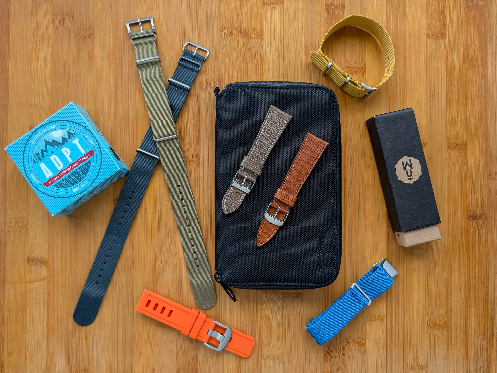
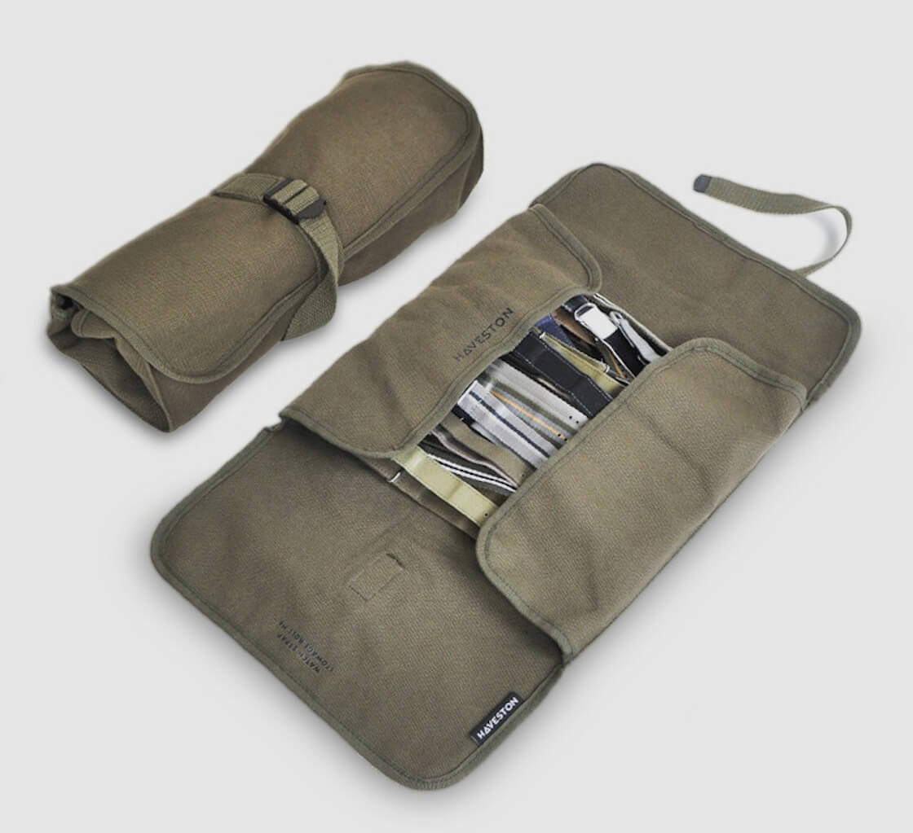
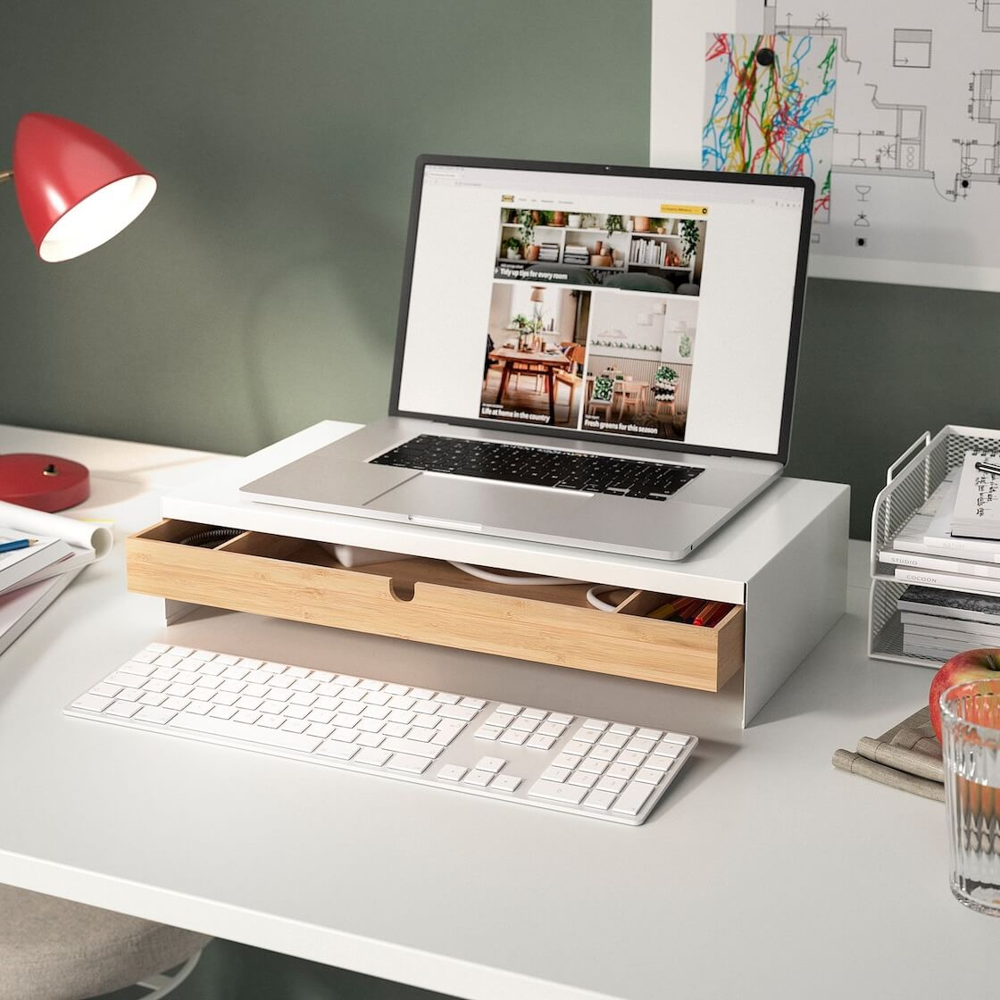
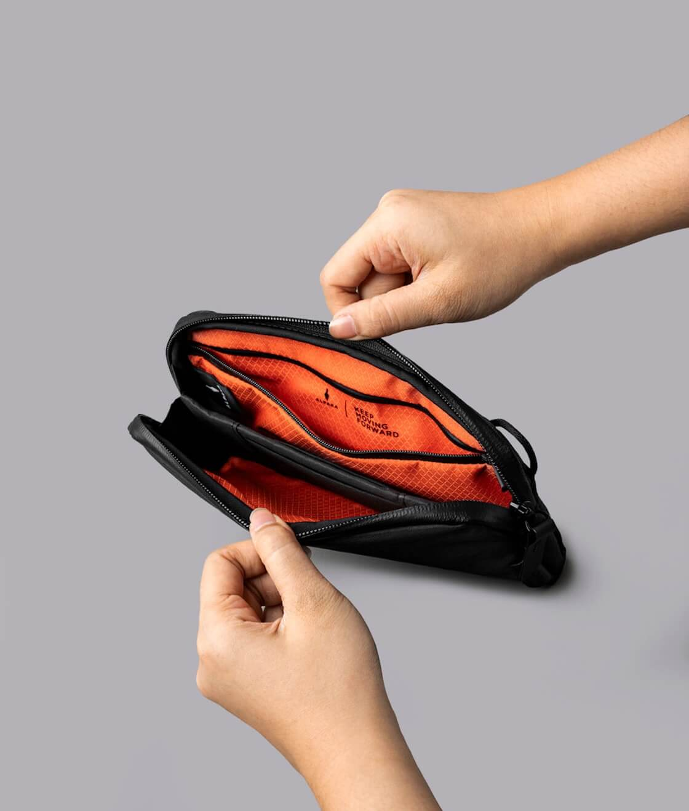
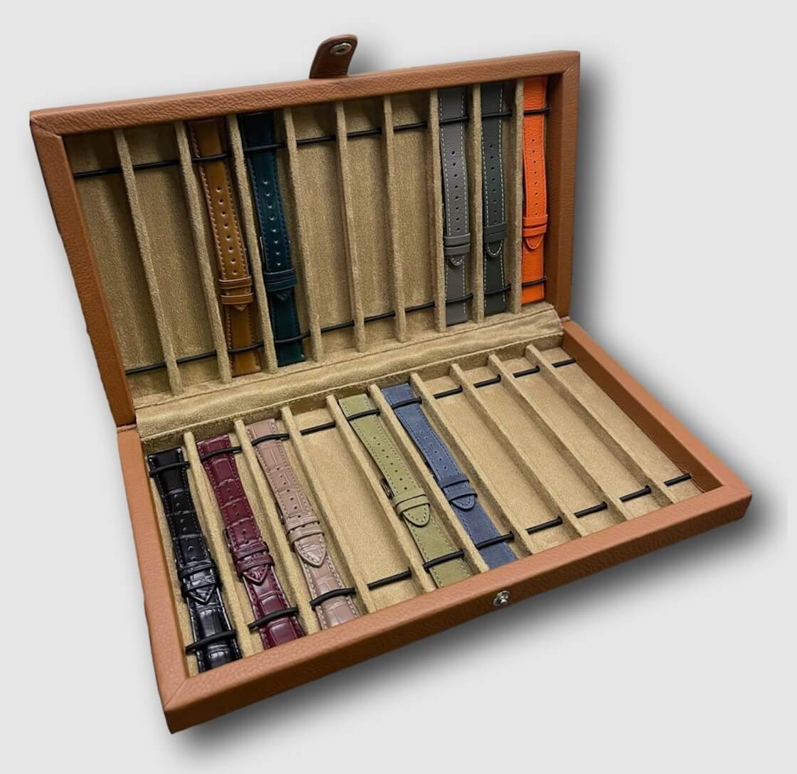
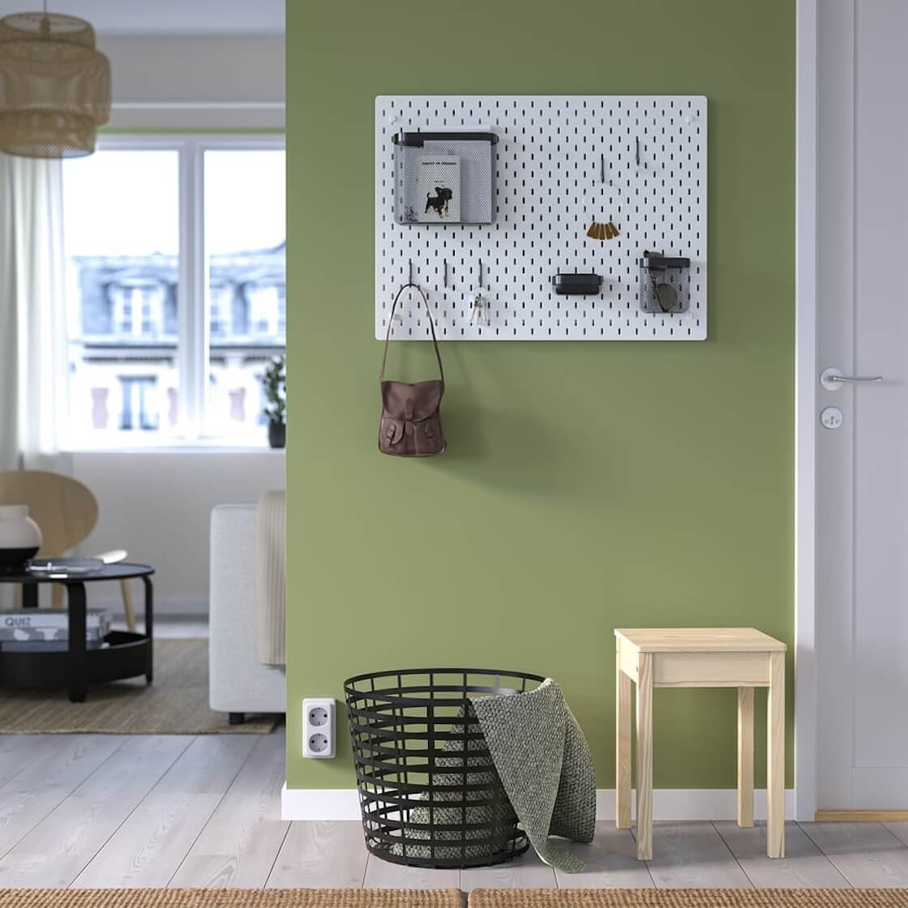
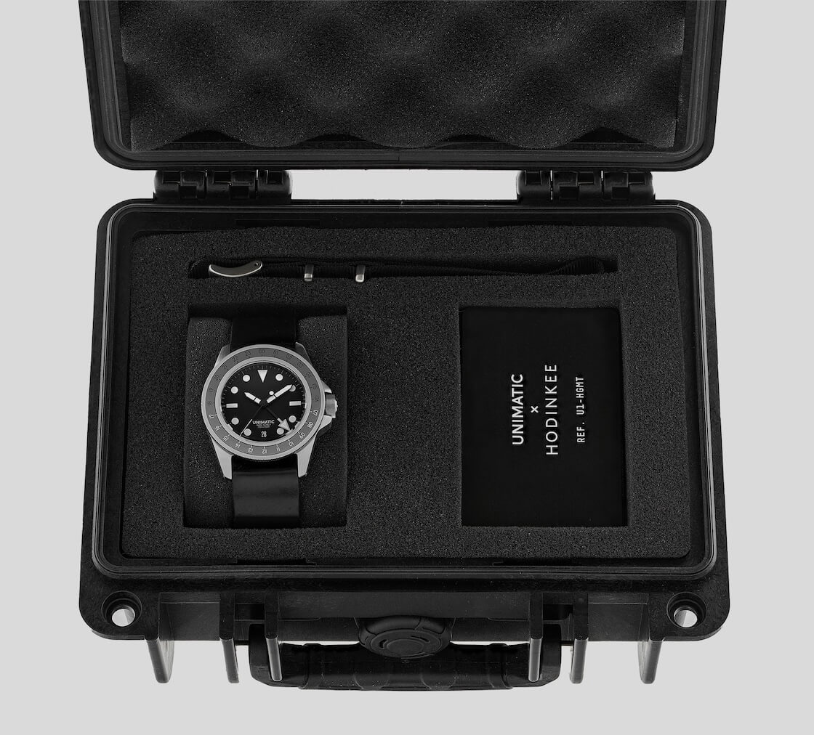
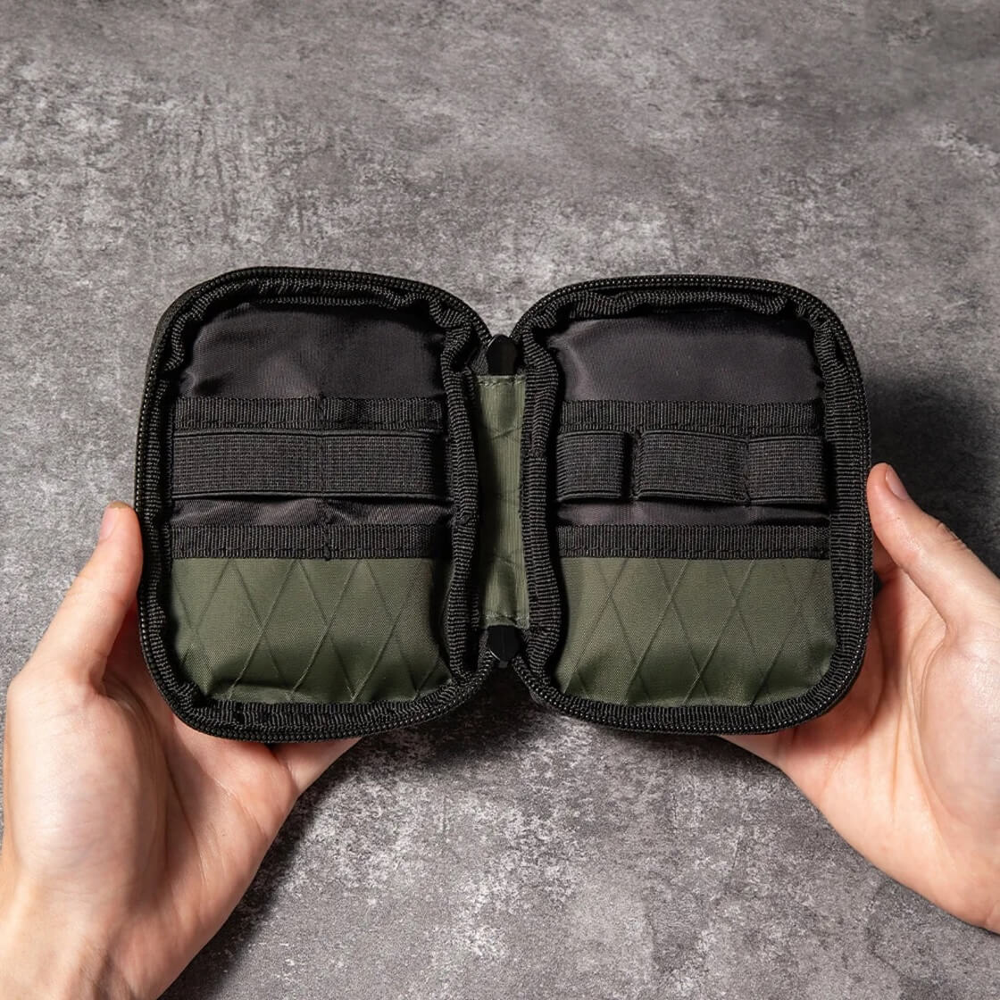
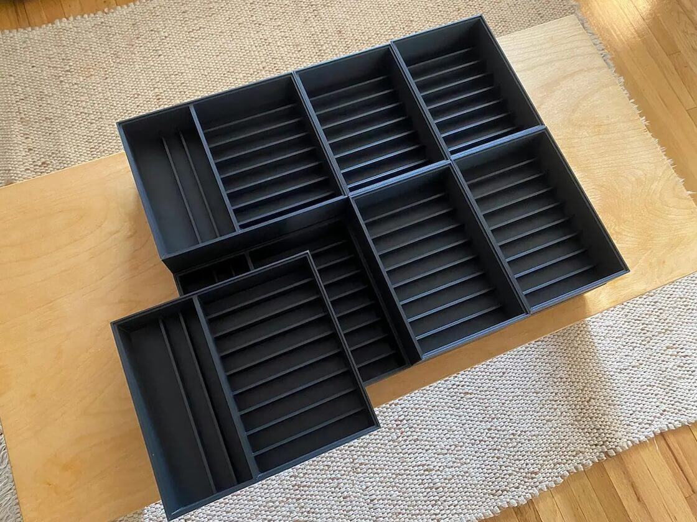
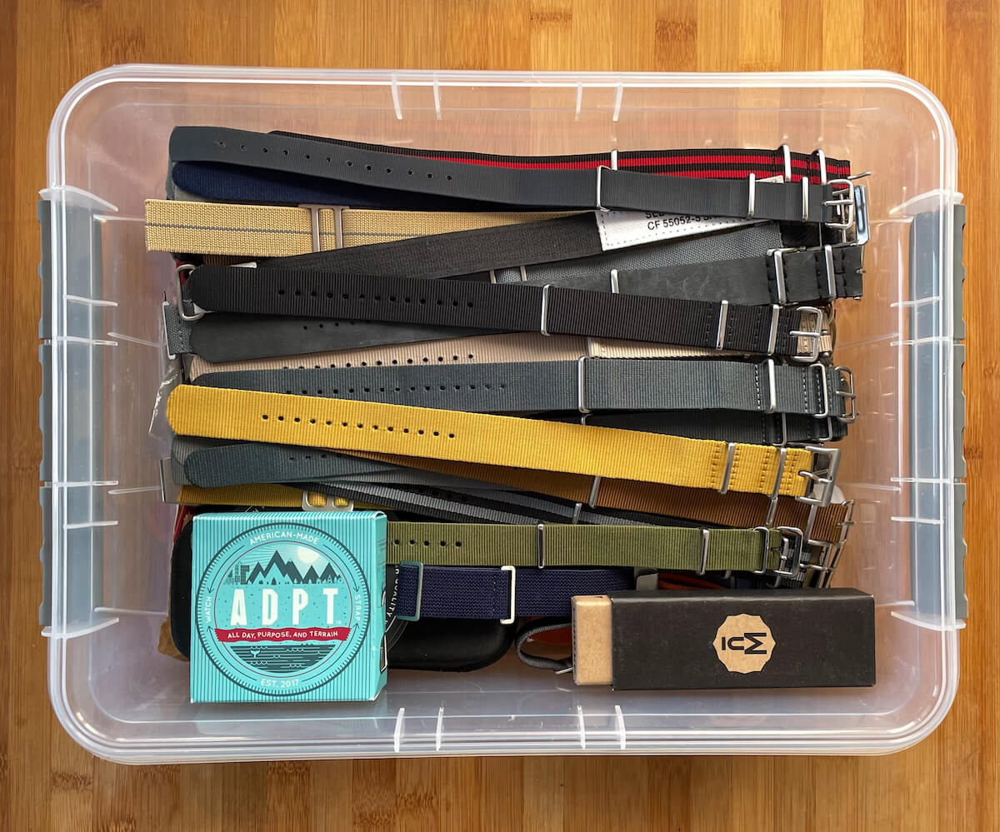

How to Store and Organize All Your Watch Straps
If you are reading this article then you know how it goes. Buying straps starts innocently. A new pass-through strap for the summer. A nice leather one for the office. Maybe a rubber one for the weekend. Fast forward a few months and you have a drawer, a corner of your desk, or (I'm guilty of this) a pile on your nightstand, all overflowing with nylon, leather, sailcloth, and rubber straps.
 Nenad Pantelic • July 3, 2023
Nenad Pantelic • July 3, 2023

I don’t know about you but for me the joy of a good strap collection is the ability to change the look of your watch in seconds. The frustration is finding the right strap when you need it.
There are countless ways to store watch straps, ranging from simple organizers to complex displays. To help you navigate the options, here is a breakdown of the pros and cons of each method so you can find the system that best fits your need.
| Storage Method | Pros | Cons |
| Watch Strap Roll | Excellent for travel; compact protection. | Hard to access daily; limited capacity (5-10). |
| Monitor Stand Drawer | Uses "dead space"; accessible while working. | Shallow drawers catch buckles; low capacity. |
| Travel Pouch | Lightweight; protects key straps. | Transport only; too small for collections. |
| Watch Strap Box | Aesthetic display; dust-free; glass top. | Bulky/takes space; fits long straps poorly. |
| DIY Pegboard | Artistic; customizable; instant access. | Dust & UV damage; requires wall drilling. |
| In a Watch Box | Free; convenient. | Extremely limited capacity; not scalable. |
| EDC Organizer | Holds tools + straps; portable "go-kit." | Low capacity; loops often too tight. |
| Drawer Inserts/Trays | Clean look; hides clutter; organized. | Sacrifices a whole drawer; "out of sight." |
| Plastic Bins | Cheap; stackable; scalable. | Looks cheap/sterile; becomes a "junk drawer." |
| Custom-Built Furniture | Perfect fit; stunning centerpiece. | Expensive; inflexible size commitment. |
| Ziplock Bags | Free; prevents scratches/dust. | Messy look; hassle to open; non-breathable. |
| Toiletry Bag | High capacity; separates by type. | Awkward fit; poor visibility; messy piles. |
| Hanging Organizer | Huge capacity; cheap; visible. | Looks cluttered; exposed to air; needs closet space. |
| Other i.e. Tie Rack | Good for pass-through straps. | Useless for two-piece straps; looks cluttered. |
Watch Strap Roll
What is is: A piece of material, usually canvas or leather, with built-in slots to hold straps. You lay the straps in, and then (as the name implies) roll it all up and secure it with a string or buckle.
Pros: Excellent for travel. It's compact, and protects your straps well.
Cons: Limited capacity. You can usually only fit 5-10 straps. It's also not ideal for everyday access, as you have to unroll the entire thing to get a strap.

Monitor Stand with Drawer
What is is: You've seen these in modern office setups. A stand that lifts your computer monitor to eye level, but features a built-in drawer underneath (often with separate compartments).
Pros: This is the ultimate "hidden in plain sight" solution for desk divers. It uses the "dead space" under your monitor. It keeps your most-used straps right within arm's reach while you work, without cluttering your desktop.
Cons: The drawers are usually quite shallow vertically. While perfect for flat straps, bulky buckles or stiff rubber straps might catch when you try to open or close the drawer. It's a "satellite" storage location for your favorites, not a place for a massive collection.

Travel Pouch or Bag
What is is: A small, zippered case, often with just two or four elastic loops or slots inside.
Pros: Purpose-built for travel. It's small, lightweight, and protects a few key straps from getting damaged in your luggage.
Cons: This is not a storage solution; it's a transport solution. It holds far too little for a main collection.

Watch Strap Box
What is is: A dedicated, often decorative, box with compartments or a series of slots for coiling straps. Many come with a glass lid so you can see your collection.
Pros: It looks fantastic on a dresser. A glass top lets you admire your collection, and the box provides excellent protection from dust.
Cons: Can be bulky and take up a lot of surface space. The fixed compartments might not be ideal for all strap types (long pass-through straps are awkward to fit).

DIY Pegboard or Wall-Mounted Display
What is is: A pegboard (like you'd see in a garage) mounted on your wall. You use pegs or hooks to hang your straps, especially pass-through and single-piece straps.
Pros: Looks incredible. It turns your collection into a wall art. It's infinitely customizable and makes grabbing a strap effortless.
Cons: Your straps are completely exposed to dust and (more importantly) sunlight, which can fade leather and nylon over time. It also requires you to drill into your wall.

In a Watch Box
What is is: Using the empty space or slots in the box where you keep your actual watches.
Pros: Simple, convenient, and free if you already have a watch box with extra room.
Cons: This only works if you have maybe two or three extra straps. It's not a scalable or serious solution. You will outgrow this in a month.

EDC (Everyday Carry) Organizer
What is is: This is often a zippered pouch or a small "grid" organizer filled with elastic loops. It's designed to hold items like pocket tools, pens, and charging cables, but those loops are also perfect for watch straps and a spring bar tool.
Pros: Creates the perfect "go-kit." You can store 3-4 straps plus your strap-changing tool and some extra spring bars, all in one compact, protected pouch. Ideal for throwing in a backpack.
Cons: Very limited capacity. This is an accessory to your main storage, not the main solution itself. The elastic loops can also be tight on thicker leather or rubber straps.

Drawer Inserts or Trays
What is is: A simple tray, often lined with felt or velvet, with long compartments. It’s designed to be dropped into a dresser or desk drawer.
Pros: A very clean, "out of sight" solution. It makes great use of existing furniture and keeps your straps neatly separated and easy to see (when the drawer is open).
Cons: You sacrifice an entire drawer. "Out of sight" can also mean "out of mind."

Plastic Containers or Storage Bins
What is is: Simple, general-purpose plastic bins. This can range from small, stackable craft organizers with dividers to larger, shoebox-sized bins.
Pros: Extremely affordable, scalable, and practical. They are stackable and protect your straps from dust and moisture. Clear bins let you see what's inside.
Cons: Can look sterile or "cheap." Without organization within the bin, it can just become a new, slightly neater "junk drawer."
My Personal Favorite: The Labeled Bin System
I have to confess, my absolute favorite, go-to method is a specific version of the plastic container.
I use clear, stackable plastic containers—the kind you might use for shoes or crafts. The key is that I put a sticker on the front of each one with labels for widths (18mm, 20mm, 22mm) and types (leather, pass-through, canvas...).
It's not the most beautiful "display," but it's wildly functional. When I want a 20mm leather strap, I pull that one box. All my pass-through straps are in another. It keeps everything 100% dust-free, it's cheap, and I can add a new box as my collection grows. For me, it's the perfect balance of protection and accessibility.

Custom-Built Storage Furniture
What is is: The "endgame" solution. A custom-built cabinet, a set of shallow drawers (like a map cabinet), or a bespoke display case.
Pros: It is perfectly tailored to your collection. It can be a stunning piece of furniture and a true centerpiece for your hobby.
Cons: Very expensive. It's also completely inflexible as you've committed to that size and space. This is for the "I'm done collecting" crowd (if such a person even exists).
Clear Ziplock Bags
What is is: Exactly What is sounds like. A simple, plastic food-storage bag.
Pros: It's practically free. It protects individual straps from dust, moisture, and from scratching each other. Good for "deep storage" or for selling/trading.
Cons: It looks messy and is a hassle to open and close. I also worry about storing nice leather in non-breathable plastic long-term.
Toiletry Bag Organizer
What is is: A standard toiletry bag or "Dopp kit," especially the kind that rolls open or has a hanging hook and multiple zippered compartments.
Pros: A creative repurpose. The various zippered (often mesh or clear) pockets can separate straps by type or size. They can hold a surprising amount, and the hanging variety can be convenient in a closet.
Cons: The compartments are not shaped for straps. They're designed for bottles and brushes, so straps can end up piled awkwardly. It's purely functional and doesn't offer a good way to see your collection easily.
Hanging Organizer
What is is: Typically a fabric organizer with clear plastic pockets, like one you'd use for shoes or jewelry. It can be hung on the back of a door or in a closet.
Pros: Amazing for large collections. It uses vertical space, and you can see dozens of straps at a single glance. It's also a very inexpensive solution.
Cons: Not the most aesthetically pleasing. Your straps are exposed, and it can look cluttered. It's also not very accessible unless you have a dedicated closet space for it.
"Any Other Method" (e.g., A Tie Rack)
What is is: Repurposing other household items. A popular one I've seen is using a tie rack (either hanging in a closet or mounted to a wall).
Pros: A clever use of an existing item. A tie rack is perfect for hanging dozens of pass-through straps, letting you see them all.
Cons: It's completely useless for two-piece straps (which is most of them). Can look a bit cluttered, just like the hanging organizer.
How to Choose the Right Method for You?
Honestly, there isn't a single "best" storage option out there. It really just comes down to your specific collection and how you actually use your straps.
Start by looking at the sheer number of straps you own. If you’re only holding onto five or so, a simple watch roll or just tucking them into your main watch box is totally fine. But if your collection has grown to fifty or more, you definitely need to start looking at bins, drawers, or hanging organizers to keep things from getting chaotic.
You also need to be realistic about your routine. If you’re swapping straps every morning, you need high accessibility (think labeled bins or a pegboard) whereas if you only switch things up once a month, a "slower" option like a box or roll is no problem.
Then, decide if you want to show them off or lock them down. You might want a glass-top box to display your collection like art, or you might prefer opaque drawers to keep the dust and light away. And of course, if you’re always on the road, forget the stationary setups and build your system around travel pouches and rolls.
Ultimately, the goal is to create a system that reduces friction and makes you want to interact with your collection. The less time you spend hunting, the more time you can spend enjoying the hobby.